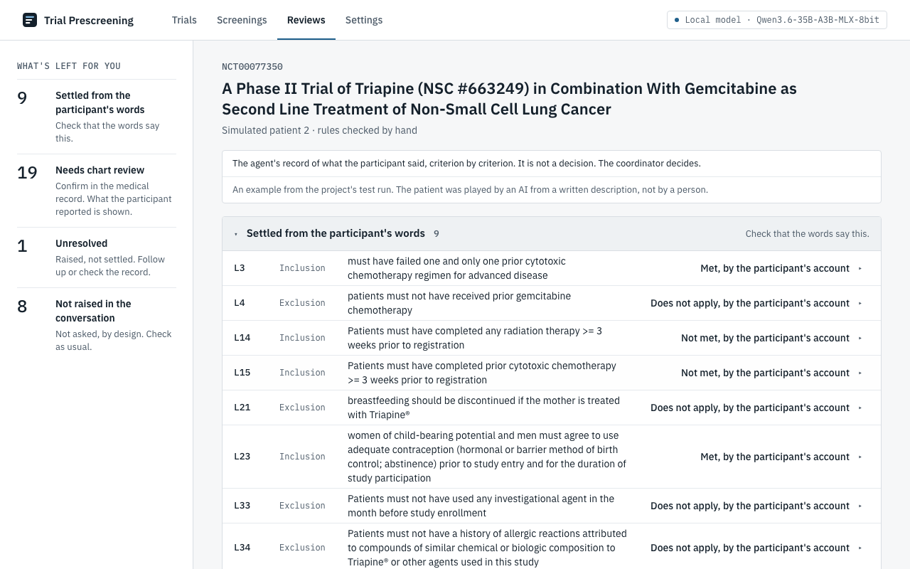

Trial Prescreening
An AI runs a trial's first eligibility conversation.
A coordinator reviews what the person said, rule by rule, and makes the decision.

A coordinator reviews what the person said, rule by rule, and makes the decision.
